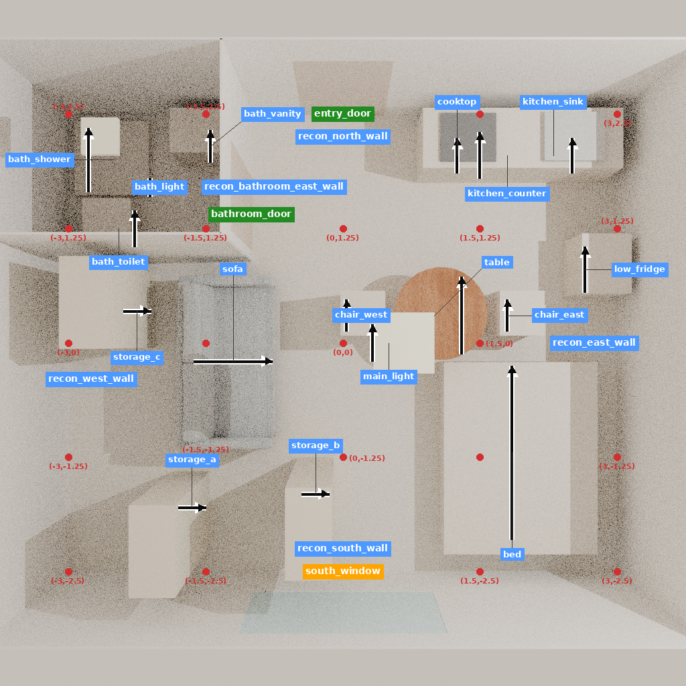
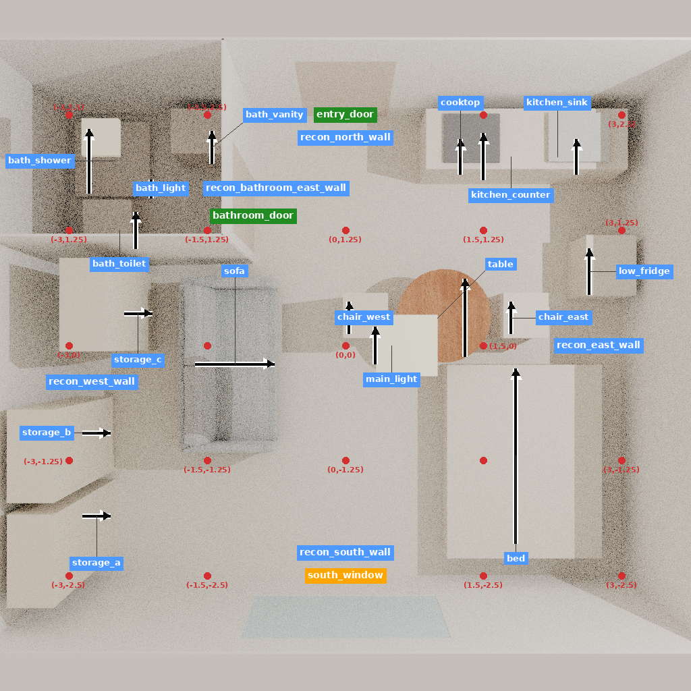

这是同一开发房间的五个已记录状态，不是五个新生成房间。原构建器运行后，24个资源文件与归档逐字匹配。每个状态包含26个对象：2个真实网格物体、15个代理物体（含2盏顶灯）和9个建筑对象。没有替换冻结状态或监督答案。
| 状态 | 视图 | 渲染秒 | 标注秒 | 状态核验 |
|---|---|---|---|---|
| storage_edit_01 | 5 | 323.20 | 8.58 | 逐字一致 |
| storage_edit_02 | 5 | 320.06 | 8.26 | 原生四元数序列化一致，原始哈希不同 |
| storage_edit_03 | 5 | 314.10 | 8.41 | 原生四元数序列化一致，原始哈希不同 |
| storage_edit_04 | 5 | 308.17 | 8.79 | 原生四元数序列化一致，原始哈希不同 |
| storage_edit_05 | 5 | 317.12 | 8.60 | 原生四元数序列化一致，原始哈希不同 |
首次构建失败来自路径混用；第一次批次在第二状态因四元数数值读写差异停止。失败和额外耗时保留。修订只重新计算原生Quaternion→RotationMatrix→Quaternion序列化，逐字核对其预期输出，没有加入位姿容差，也没有放宽质量阈值。成功的第一状态和第二状态导出复用，其余按原顺序继续。
五视图使用已固定的CPU渲染设置。当前Drake与历史运行版本不同；没有建立历史像素等价。各组共同获得这一版本的实际图像，不能把新的观察与旧适配器历史结果混作同一实验。
19/24个固定单元完成实际多模态processor编码，仍有5个缺视图。68条分组组件、24个联合序列以及2975个原始目标token全部保留；没有改目标、权重或补写决定。普通联合对照与分阶段方案的视图张量一致，联合推理前缀也经实际编码核对。生成接口检查使用显式目标回放，不是模型推理。
剩余air_edit_01、waterloo_edit_02/04、lifecycle_02/03仍保留。缺决定监督的14个单元也全部保留。不能以当前可编码子集开始训练并称为原协议的完整实验。
新增最近邻和现有代码的解释见 方法复核、实际阅读记录。理由先行、加权交叉熵、反馈编辑与正确性监控都有普通方法或直接前作；本轮没有形成新的学习效果证据。真实检索网格不等于原生VLM朝向/材质/质量分析和完整资产路径均已执行。
本轮新增模型调用、训练更新、付费API和完整生成均为0。原生成记录、原材料和来源文件只读；已完成BLEND中间件在图像校验后清理。旧交付压缩包仅在所有成员与展开文件哈希一致时删除，未通过该条件的包保留；详见清理回执。
下图用于检查恢复内容，代理与低采样噪声可见，不充当功能金标准。

